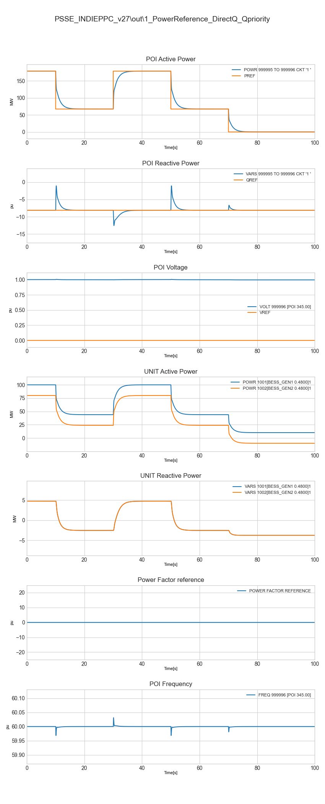

1 / 31
Power Systems Engineer specializing in renewable energy integration, dynamic modeling, and User-Defined Models for large-scale grid projects
The University of Texas at Austin
2025 · GPA 3.79/4.0
Fulbright Scholar · George J. Heuer Fellow (2023 & 2024)
Institut Teknologi Bandung
2022 · GPA 3.50/4.0
Universitas Diponegoro
2014 · GPA 3.76/4.0 · Magna Cum Laude
Persatuan Insinyur Indonesia
2022 · Reg. No. 1026-02-052630
CIGRE U.S. National Committee
2024 – Present · No. 920241221
Member · No. 920241221 · 2024 – Present
Affiliated through The University of Texas at Austin. CIGRE is the leading global technical organisation for electric power systems, bringing together experts from over 90 countries on large electric systems.
Senior Professional Engineer · Reg. No. 1026-02-052630 · 2022 – Present
The Institution of Engineers Indonesia. Highest professional engineering certification level in Indonesia, recognised nationally for senior engineering practice and technical leadership.
Associate Professional Engineer · Reg. No. 2.002.22.1.2.00010899 · 2022 – Present
The Institution of Engineers Indonesia. Associate level professional engineering registration recognising formal engineering qualifications and practice within the national engineering framework.
INS Engineering · Austin, TX, USA (Remote)
June 2025 – Present
Duties
Developed high-fidelity dynamic models in PSSE and PSCAD for utility-scale renewable energy projects up to 500 MW and 345 kV, covering solar, wind, and battery energy storage systems using inverters from Sungrow, SMI, Power Electronics, and Vestas. Designed Fortran-based User Defined Models for governor and Power Plant Controllers. Built custom lithium-ion and classical battery models in PSCAD and MATLAB/Simulink for data center applications.
Achievements
Delivered over 25 compliant interconnection models meeting full ERCOT, PJM, and MISO standards. Achieved less than 0.1% deviation between PSCAD and MATLAB/Simulink battery models, well below the standard 1.64% library deviation. Benchmarked User Defined Model results against DIgSILENT PowerFactory and Python, confirming accuracy for small signal and transient stability assessment.
The University of Texas at Austin · Austin, TX, USA
August 2023 – May 2025
Duties
Supported undergraduate and graduate power systems courses, mentoring students in power system modelling using OpenDSS and MATLAB. Conducted independent research on hardware-in-loop integration for real-time power grid measurement using LabVIEW, sensors, and DAQ systems.
Achievements
Completed a master's thesis developing a novel hardware LabVIEW framework that removed the need for a conventional transformer by stepping down 220V to 10V using a custom sensor and resistor board setup. Improved average student course project scores by 10% through case-based teaching methods.
Tesla · Giga Texas, Austin, TX, USA
May 2024 – August 2024
Duties
Designed AutoCAD electrical layouts for V3/V4 Supercharger sites and prepared full engineering drawing packages in compliance with 2018 IBC, 2020 NEC, and California Title 24 codes.
Achievements
Automated load calculations for 3 MW fast-charging sites across 12 installations, removing $65,000 in rework costs. Reduced drawing review time by 40% through standardised templates and improved mark-up clarity.
PT PLN (Persero) · Riau, Indonesia
October 2016 – July 2023
Duties
Managed engineering design, field supervision, and commissioning for 150 to 500 kV substation and transmission line projects across Sumatra. Conducted system planning involving steady-state and transient stability considerations for large-scale grid expansion.
Achievements
Managed a $5 million project portfolio with a 95% on-time energisation rate. Expanded Sumatra grid bulk power capacity by 28% serving 25 million users. Delivered the first 150 kV underground cable project in Riau Province, requiring detailed cable impedance analysis.
Schneider Electric · Jakarta, Indonesia
December 2014 – April 2016
Duties
Designed and tendered distribution transformers from 315 to 3150 kVA, preparing technical specifications and pricing for over 100 units per month for utility clients.
Achievements
Reduced transformer core losses by 20%, saving approximately $30,000 annually. Maintained an 80% bid acceptance rate through accurate capital expenditure and loss cost analysis.
The University of Texas at Austin · UT Electronic Theses and Dissertations · 2025
Designed a custom hardware setup using voltage and current sensors, a resistor board, and NI-9220 DAQ modules to step down voltage from 220V to 10V without using a conventional transformer. Implemented PLL-based control strategy in LabVIEW and PLECS for real-time grid measurement.
Published in UT Electronic Theses and Dissertations, The University of Texas at Austin, 2025.
Solely responsible for the conception, design, and execution of this research. Developed the full hardware setup, implemented the PLL-based control strategy in LabVIEW and PLECS, conducted all experiments, and authored the thesis in its entirety.
View Publication →2022 International Conference on Technology and Policy in Energy and Electric Power (ICT-PEP) · IEEE · December 2022
Proposed a modular design for EV charging stations utilizing a solar panel shelter to reduce energy drawn from the main power grid. Included simulation development and financial modeling with IRR, NPV, and payback period analysis.
Published in IEEE Xplore, 29 December 2022. ISBN: 979-8-3503-1027-6 (Electronic), 979-8-3503-1028-3 (Print).
Led the conception and design of the integrated EV charging system with modular substation and photovoltaic shelter. Primarily responsible for simulation development, financial modelling including IRR, NPV, and payback period analysis, and authored the majority of the paper.
View on IEEE Xplore →Transient: Jurnal Ilmiah Teknik Elektro · Vol. 3, No. 4, pp. 677–684 · Universitas Diponegoro · 2015
Used a Genetic Algorithm to automatically tune PI controller parameters for a shunt active power filter to improve harmonic filtering and stabilize the power supply. Conceived and designed the full optimization framework and conducted all simulations.
Published in Transient: Jurnal Ilmiah Teknik Elektro, Universitas Diponegoro, May 2015.
Conceived and designed the optimization framework, implemented the genetic algorithm to tune PI controller parameters, conducted all simulations, and interpreted the results. Primary author and responsible for the majority of the analysis and writing.
View Publication →CEPSI 2021: The Energy Digicon of Asia Pacific · AESIEAP · Philippines · November 2021
Technical and economic research on extra high voltage substation planning for the 500 kV Sumatera backbone project. Confirmed project viability with IRR of 14.34%, NPV of IDR 3.28 trillion, and B/C ratio of 1.038.
Presented at CEPSI 2021, Philippines, November 2021. Certificate of Appreciation received from AESIEAP on 11 November 2021.
Conducted independent technical and economic research covering reactor configuration evaluation, transformer selection, and financial feasibility analysis for the 500 kV Sumatera backbone project.
Fulbright Foreign Scholarship Board · Bureau of Educational and Cultural Affairs, U.S. Department of State · 2023 – 2025
Awarded USD 38,000 per year to pursue a Master of Science in Electrical Engineering at The University of Texas at Austin. Title of Application: Master of Science in Electrical Engineering, The University of Texas at Austin.
Cockrell School of Engineering · The University of Texas at Austin · 2024
Fellowship (Donor Code: FHEUR). Awarded USD 1,000 in recognition of academic excellence in graduate engineering studies at the Cockrell School of Engineering.
Cockrell School of Engineering · The University of Texas at Austin · 2023
Fellowship (Donor Code: FHEUR). Awarded USD 1,000 in recognition of academic excellence in graduate engineering studies at the Cockrell School of Engineering.
Persatuan Insinyur Indonesia (Institution of Engineers Indonesia) · 2022
Registered as Senior Professional Engineer, Reg. No. 1026-02-052630. Highest professional engineering certification level in Indonesia. Non-monetary professional award recognising senior engineering practice.
Association of Energy Service Industry of East Asia and Pacific (AESIEAP) · November 2021
Received for presenting the paper on strategic evaluation of the 500 kV Sumatera EHV substation project at CEPSI 2021: The Energy Digicon of Asia Pacific, Philippines. Issued 11 November 2021.
Universitas Diponegoro · Faculty of Engineering · 2014
Graduated with highest honours in Electrical Engineering with a GPA of 3.76/4.0. Studies funded independently through an achievement-based fee waiver throughout the full undergraduate programme.
INS Engineering · Dec 2025 – Mar 2026
Developed a Fortran User Defined Model in PSSE to manage active and reactive power for up to 4 downstream inverters. Added control loops for frequency support, ramp rate, and AVR with line drop compensation and droop control.

Power Reference Direct Q Qpriority
INS Engineering · Nov 2025 – Feb 2026
Moved a governor control model from MATLAB/Simulink into PSCAD for Utility Innovation Group. Benchmarked results against DIgSILENT PowerFactory to confirm accuracy for generator frequency, speed, active/reactive power, and terminal voltage.
INS Engineering · Dec 2025 – Jan 2026
Wrote Fortran code to build a Power Plant Controller UDM for ETAP, managing ICON, CON, STATE, and VAR modules to compile a working DLL. Ran detailed model quality tests for flat starts, voltage and frequency step-downs, and short-circuit ratio conditions.
INS Engineering · Sep 2025 – Oct 2025
Built custom battery energy storage models (Classical and Hysteresis Shepherd) in PSCAD for a Texas data center. Created a control system to manage state of charge and meet ERCOT's strict 0.333/s ramp rate limit during a 261-second dynamic load cycle. Cross-checked all results with MATLAB/Simulink.
INS Engineering · Sep 2025
Dynamic modeling for a solar project connecting to Duke Energy's 230 kV grid using Sungrow inverters in PSSE v35. Ran 15 test cases including 3-phase faults, unbalanced faults, and ride-throughs across different system strengths (SCR 2.5 and 20).
INS Engineering · Sep 2025
MISO compliance testing for a solar plant in PSSE, focusing on model stability under weak grid conditions down to SCR of 2. Adjusted inverter controllers (REGCA, REECA, REPCA) to stop voltage oscillations during low voltage ride-through tests.
INS Engineering · Aug 2025
Built and tested custom lithium-ion battery models in both MATLAB/Simulink and PSCAD, scaling from single cells to large multi-cell arrays. Achieved only 0.08% difference between models — well below the standard 1.64% library deviation.
INS Engineering · Jul 2025 – Aug 2025
Modeled a 6-branch renewable project (solar, wind, and battery) for Pattern Energy in PSSE, including lines, transformers, and generator impedances. Identified a reactive power shortage on the wind branch and added capacitor banks for independent operation.
UT Austin · Master's Thesis · 2025
Developed a novel hardware-LabVIEW framework for real-time measurement in scaled power grids. Stepped down 220V to 10V using custom sensors and a resistor board — removing the need for a conventional transformer. Implemented PLL-based control in LabVIEW and PLECS.
UT Austin · Jan 2025 – Apr 2025
Developed time-domain solutions for switching transients, resonance, and inverter harmonics. Designed filters that reduced Total Harmonic Distortion by 65%.
Tesla · May 2024 – Aug 2024
Drafted layouts for 16 V3/V4 Supercharger posts in AutoCAD following 2018 IBC and 2020 NEC codes. Engineered a California Title 24-compliant 16-post site. Saved $40k by adjusting switchboard and wiring plans. Cut drafting time by 33% using automated load calculations.
PT PLN (Persero) · Aug 2016 – Jul 2023
Managed engineering design, field supervision, and commissioning for over 20 high-voltage (150 to 500 kV) substation and transmission projects across Sumatra. Expanded grid capacity by 28% serving 25 million users. Delivered the first 150 kV underground cable in Riau Province.